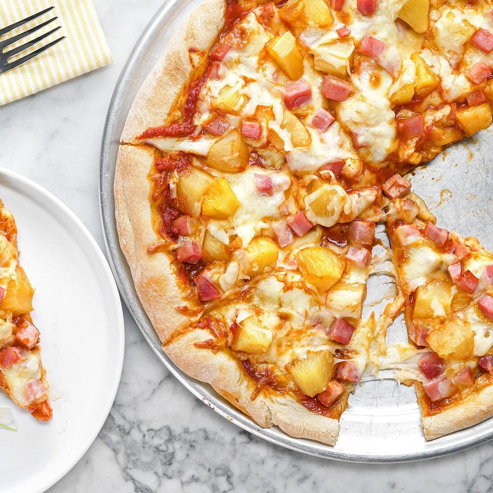
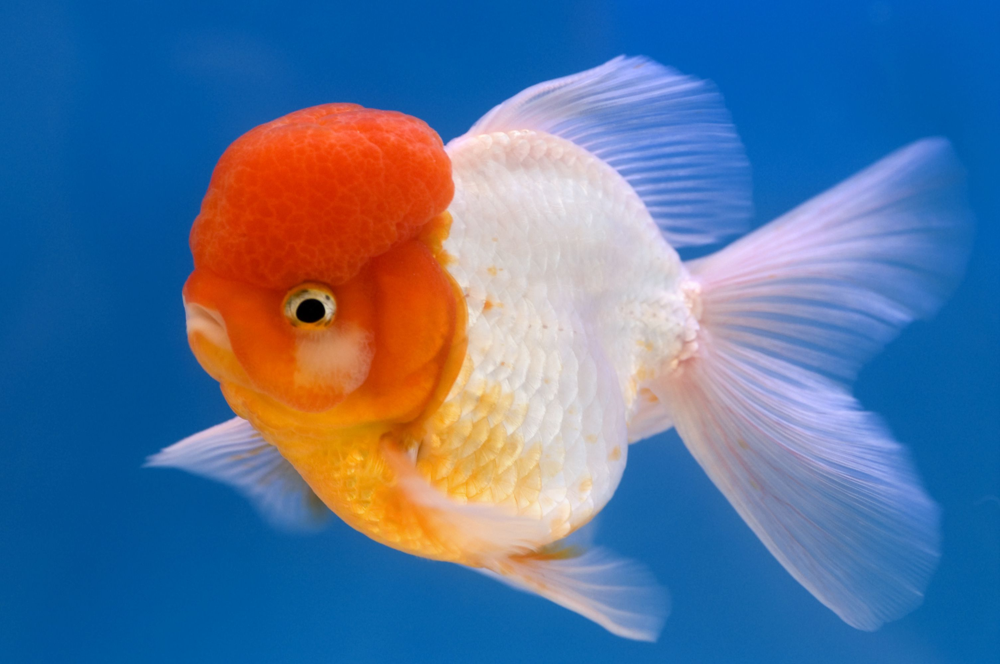
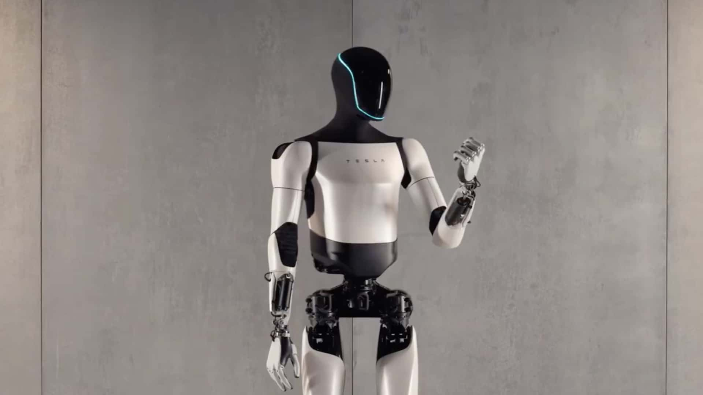

My Slogan
Think Different.
I value innovative thinking and problem solving in real-world scenarios.
Learn moreMy nickname is Jey, and one slogan I have is 'Think Different,' which is the same as Steve Jobs. I believe that innovative thinking, and thinking outside of the box is an incredibly valuable skill to have in many real world scenarios.
 One hobby that I have is model cars and planes, and I love to make new model cars and planes when I have free time, and go fly and drive them when I can with other people. Another hobby I have is robotics, and I enjoy building a variety of different machines for different competitions and tasks in my day to day life. Additionally, I also love to play video games with friends, and hangout with them at nice places like the beach and the park. My favorite dessert is ice cream, and my favorite food is pizza. More specifically, my favorite flavor of ice cream is vanilla, and my favorite pizza topping is pineapples. One last thing is that I love to play card games ,like spades, blackjack, and poker.
 My first ever pet that I got was from the Delmar fair, and it was a little gold fish that I won from a carnival game. After going on some more rides, and letting my parents hold the goldfish while I went on them, we started to go back home in the car. Sadly, when my dad was exiting the parking lot, we went over a speed bump, and then half of the water in the tank spilled out. Some of the water went into the carpet of the car while most of it soaked my pants, where I was holding the aquarium. I was quite sad, but I thought it was still fine as the goldfish still had some water to swim in. When we got back home, I tried feeding him a piece of broccoli, as I thought the goldfish would eat it because it was small. Unfortunately, I discovered that I needed goldfish pellets, so I forced my mom to get some pellets for me from Walmart. Sadly, Bob passed away 3 days later, and I buried him next to my tomato plant in the garden.
 In the future, I hope to pursue a career in engineering and technology , as I can continue my aspirations of building and creating. I want to design innovative tools, machines, or even robots/humanoids that can help solve real world problems in addition to helping improve people's lives. In addition to this, I also hope to collaborate with other teams where I can share my knowledge and also learn new things, along with meeting new people and forming new connections. Some interesting fields of engineering and technology for me are aerospace engineering, and software development. Moreover, I am also very fascinated by how rapidly technology evolves and how it can be used to make sustainable advancements. I want to be at the forefront of this change, and also work on projects that push the boundaries of innovation and further develop environmental responsibility, for example creating energy efficient systems.
Think Different.
I value innovative thinking and problem solving in real-world scenarios.
Learn moreA carnival goldfish.
Won at the Del Mar Fair, named Bob. A short but memorable story.
Del Mar FairBuild helpful robots.
Interested in engineering and technology to create tools that help people.
Humanoids